First use, desktop

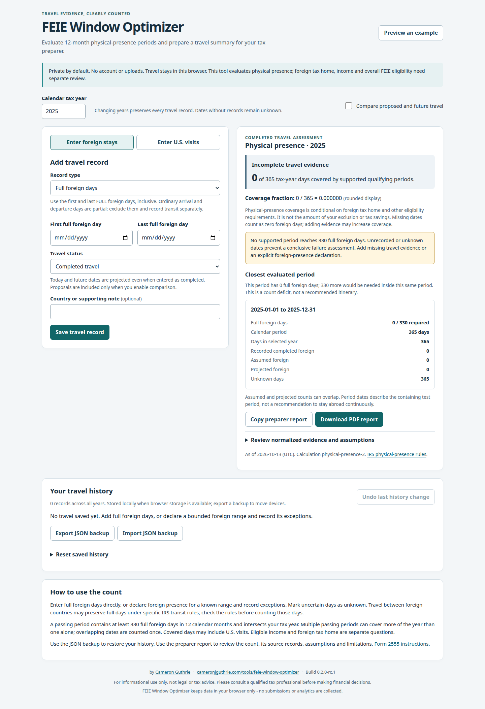
Empty saved history, scope, direct entry and initial incomplete result.
1440×1000 viewport · 1440×2105 image · full page0.2.0-rc.1 · 22 actual production captures · 9 PDF/clipboard samples · synthetic data only.
Full assessment: SECOND-PASS-REVIEW.md in project root · Screenshot index · Capture manifest · Screenshot contact sheet · PDF page contact sheet
Desktop 1440×1000; mobile viewport 390×844, not a physical phone. Click an image for its original resolution. Region captures and the later review-session viewport are labeled. No videos or live filing/deployment actions.

Empty saved history, scope, direct entry and initial incomplete result.
1440×1000 viewport · 1440×2105 image · full page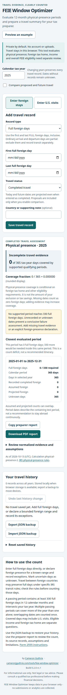
Same empty state at 390px; full page exposes the vertical task sequence.
390×844 viewport · 390×4005 image · full page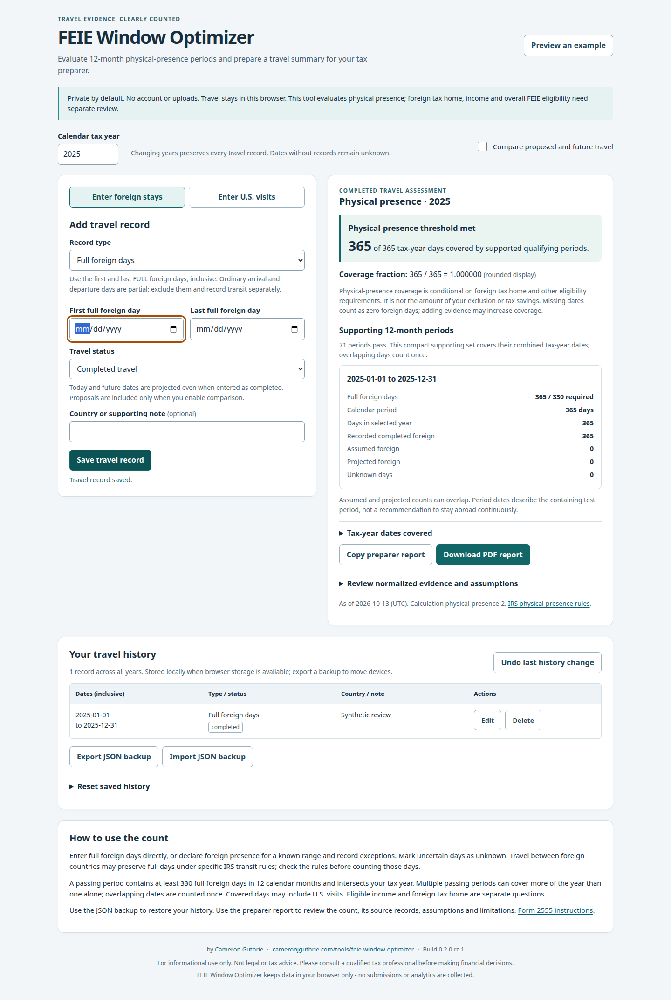
Recorded 2025 full year, 365/365 coverage and direct entry; ordinary-recorded.pdf.
1440×1000 viewport · 1440×2144 image · full page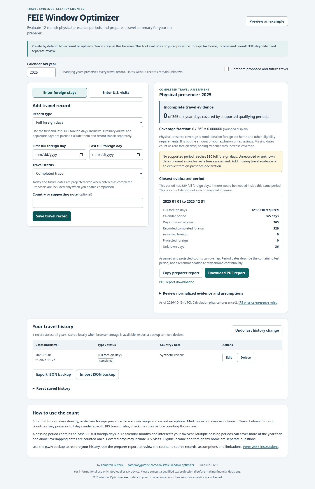
Endpoint edited to Nov 25: 329 recorded days, no supported coverage.
1440×1000 viewport · 1440×2231 image · full page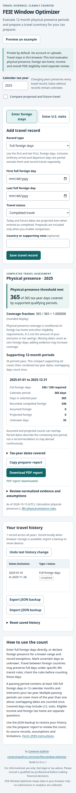
Endpoint corrected to Nov 26: 330 foreign days, 365/365 coverage; threshold-330.pdf.
390×844 viewport · 390×4029 image · full page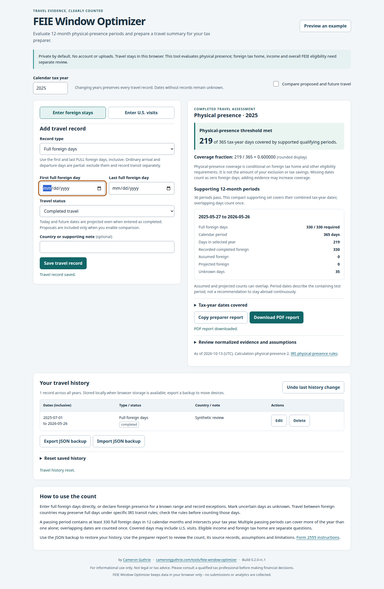
July 2025 through May 2026 stay supports 219/365; partial-year.pdf.
1440×1000 viewport · 1440×2207 image · full page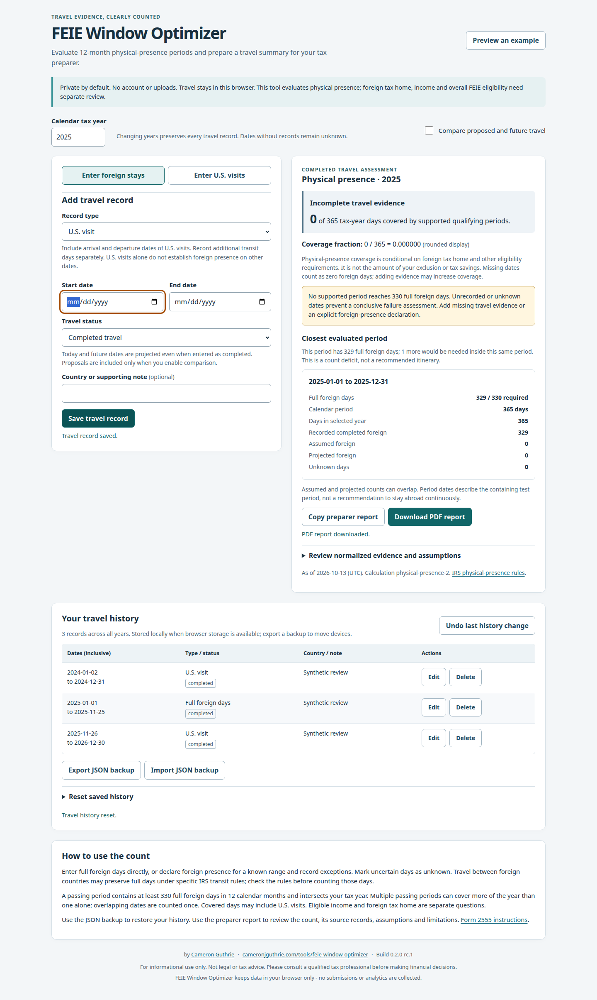
2025 result remains incomplete despite upper-bound failure; nonqualifying.pdf. This is not the definitive not-met sample.
1440×1000 viewport · 1440×2409 image · full page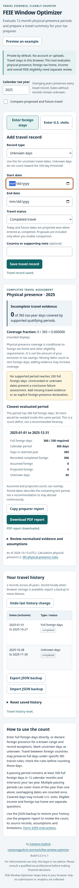
300 foreign days plus unknown dates; incomplete.pdf.
390×844 viewport · 390×4292 image · full page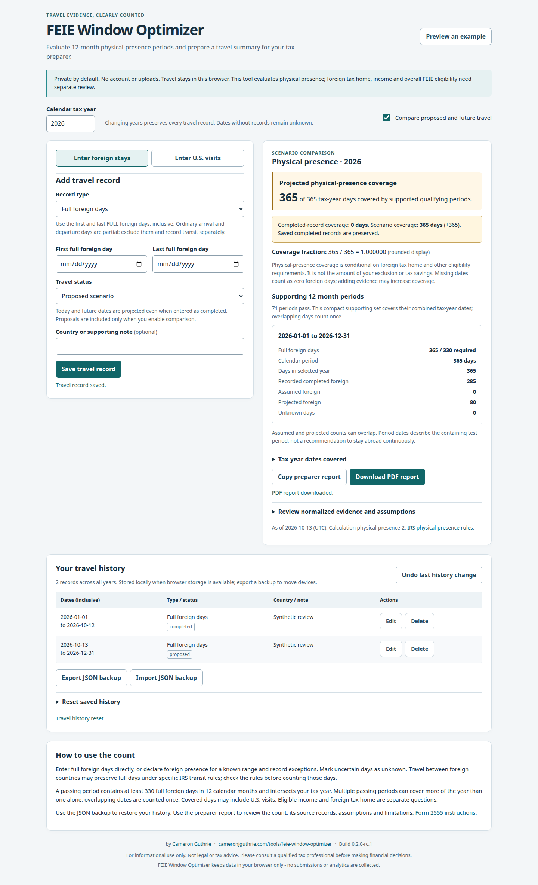
2026 completed coverage 0 versus scenario 365; 285 completed plus 80 proposed foreign days; projected-scenario.pdf.
1440×1000 viewport · 1440×2365 image · full page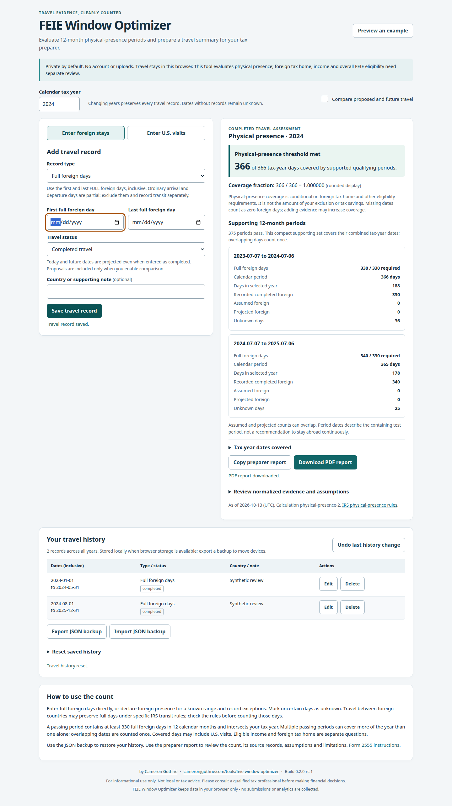
2024 union 366/366 with two twelve-month supports; multiple-periods.pdf.
1440×1000 viewport · 1440×2558 image · full page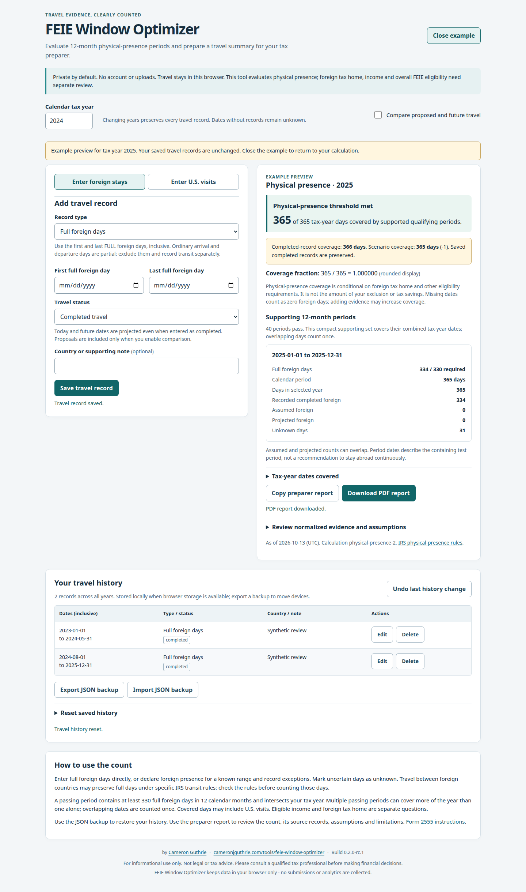
2025 demo incorrectly subtracts saved 2024 coverage of 366 from 365 demo days (C02).
1440×1000 viewport · 1440×2439 image · full page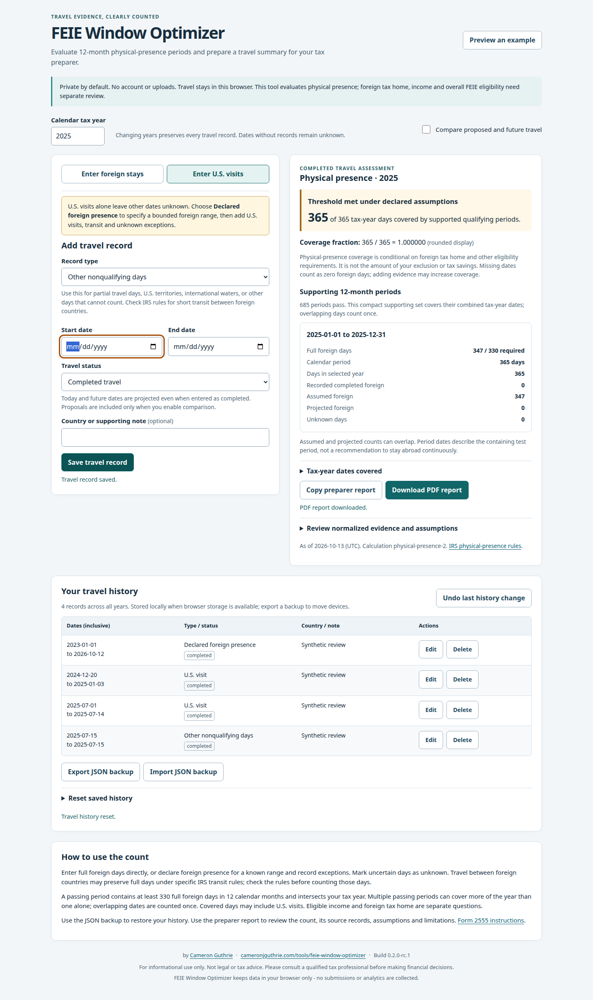
Multi-year bounded declaration plus visit and transit exceptions; 347 assumed foreign days; declared-with-us-visits.pdf.
1440×1000 viewport · 1440×2427 image · full page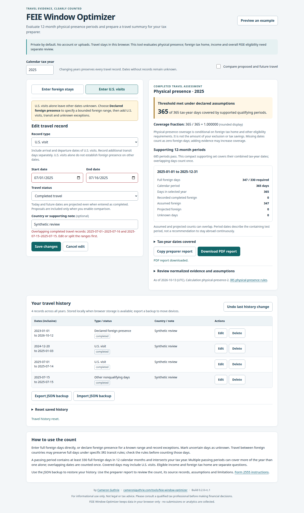
Extending the July U.S. visit overlaps the transit record; existing history remains intact and correction is retained.
1440×1000 viewport · 1440×2427 image · full page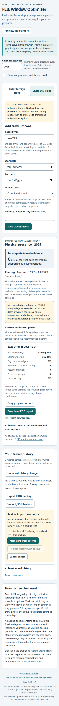
Actual downloaded four-record JSON selected; count-only review before merge.
390×844 viewport · 390×4603 image · full page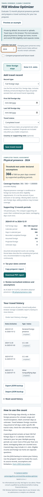
Imported four records retained after reload and change to 2024; table requires local horizontal scrolling.
390×844 viewport · 390×4387 image · full page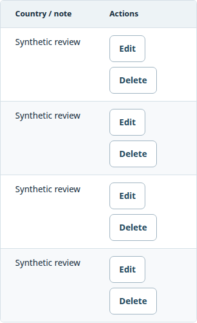
Actual history region scrolled right to Edit/Delete; identifying date column is off to the left.
390×844 viewport · 324×531 image · region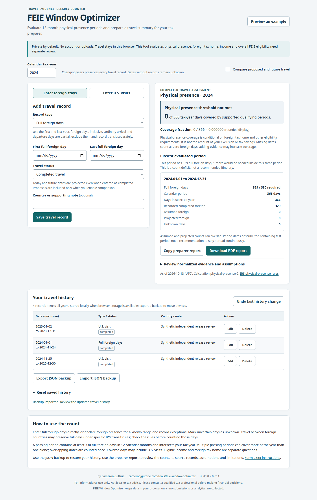
2024 329-day foreign stay with the entire evaluation horizon classified; nonqualifying-confirmed.pdf.
1440×1000 viewport · 1440×2270 image · full page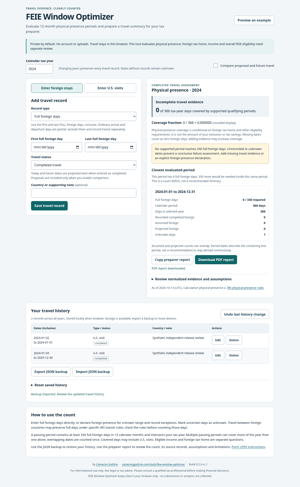
Two U.S. ranges leave one unknown date; threshold is impossible, but app says missing evidence prevents a conclusion (C01).
1440×1000 viewport · 1440×2335 image · full page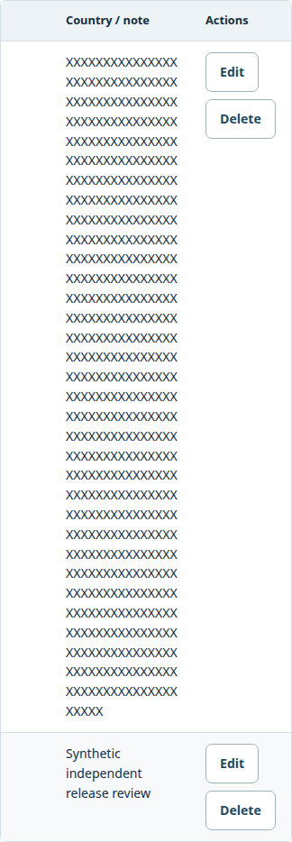
Allowed 500-character unbroken note wraps; actions remain available in the horizontally scrolled table. No overflow defect asserted.
390×844 viewport · 324×934 image · region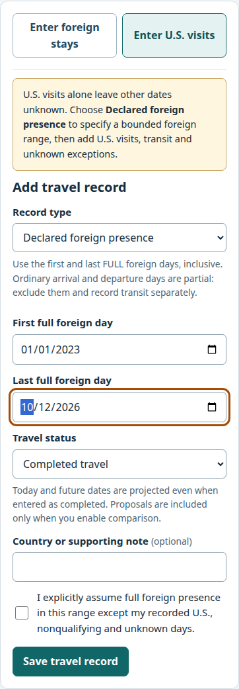
Unsaved synthetic declaration, direct dates and explicit exception acknowledgment; detail capture of actual form.
390×844 viewport · 362×1041 image · region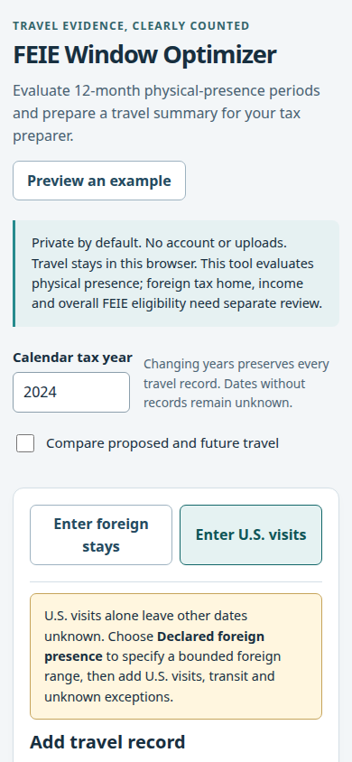
Top 844px of the later synthetic review session; scope/year/settings precede the date fields. Not an empty first-use capture.
390×844 viewport · 390×844 image · viewport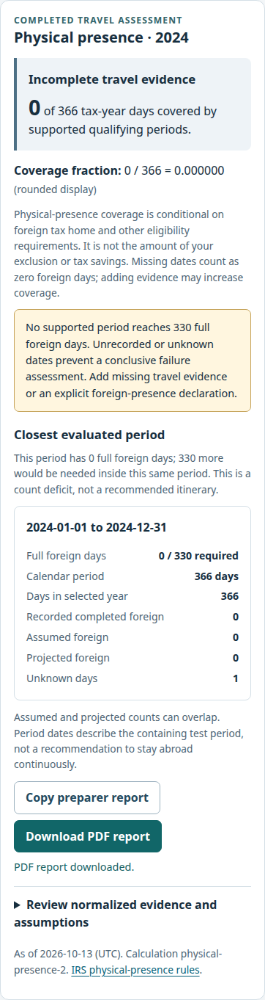
Later one-unknown-day status in a readable result-region capture; count and interpretation remain distinct.
390×844 viewport · 362×1362 image · region